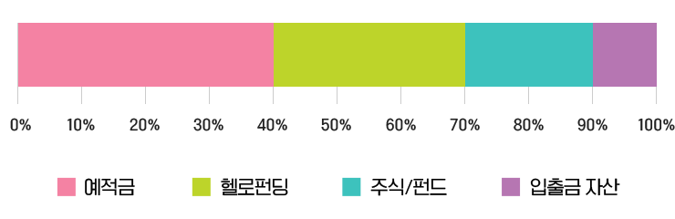
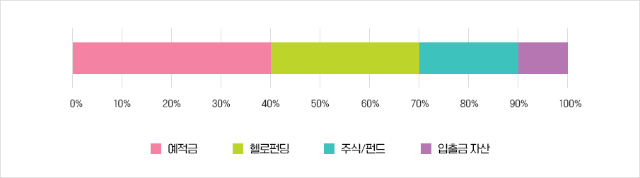

안녕하세요.
저는 바리스타로 근무 중인 남예솔입니다.
카페를 운영하며 고객님들의 니즈에 맞는 음료와 메뉴를 분석하고 개발하여 제공해 드리고 있습니다!
재테크도 흥미가 가야 투자하고 관리를 한다!!
투자 원칙은 보장성과 안정성 중요
저의 투자 성향은 공격형과 안정형 중에서 수익률이 조금 낮더라도 변동성과 손실 가능성이 적은 안정형에 속합니다.
적은 금액으로도 매일 투자가 가능하고 빠르게 수익을 볼 수 있어 장기보다는 단기 투자를 선호하는 편입니다.
재테크는 나의 자산으로 시작하는 것이기 때문에 상품의 안정성과 보장성을 꼼꼼히 따져보는 편이에요. 또한 투자에 흥미를 느껴야 계속 관심을 가지고 꾸준히 투자하고 관리할 수 있기 때문에 투자 흥미도도 굉장히 중요하게 생각합니다.
그런 의미에서 헬로펀딩 투자 상품들은 저의 NEEDS를 완벽하게 충족하고 있습니다.
남예솔님의 투자자산 관리


우선 재테크는 주식으로 먼저 시작을 했습니다.
기업의 미래에 대한 가치를 중점적으로 보고, 장기 투자를 할지, 단기 투자를 할지 선정하고 있습니다.
전체적으로 실행 중인 자산관리를 비율로 따졌을 때 예적금 40%, P2P 투자 30%, 주식 및 펀드 20%, 입출금 자산을 10% 정도로 두고 관리하고 있습니다.
시스템, 투자환경이 잘 구축되어 있는 헬로펀딩과의 첫인사
SCF는 소액으로 빠른 수익 가능해 초 단기 투자에 최적
예적금이나 예측하기 다소 어려운 주식 이외의 다른 투자 방식을 알아보던 와중 지인의 추천으로 헬로펀딩을 처음 알게 되었고 그것을 계기로 시작하게 되었습니다!
온라인연계투자(P2P투자) 특성상 위험성은 있을 수 있겠지만, 그만큼 높은 이자율을 보장하고, 현재까지 (제가) 투자했던 모든 상품들이 어떠한 지연이나 연체와 같은 상황이 없었기에 저와 같이 단기적으로 투자하여 이윤을 보고 싶은 사람을 위해선 헬로펀딩의 시스템이나 환경이 잘 구축되어 있다 생각하여 헬로펀딩을 선택하게 되었습니다!
저는 SCF 상품을 주로 투자하고 있는데요.
소액으로도 빠르게 수익성을 눈으로 볼 수 있고, 가이드라인이 있기 때문에 좀 더 안전하게 분산 투자할 수 있는 것 같습니다.
초보자도 쉽게 따라 할 수 있는 헬로펀딩
상품에 대한 정보와 증빙자료도 보기 좋아요~
타 P2P 투자 홈페이지에 들어갔을 때 많은 정보들이 있지만 그에 비해 눈에 들어오지 않는 경우가 많았습니다.
헬로펀딩은 홈페이지가 눈에 보이기 쉽게, 초보자들도 쉽게 가이드를 따라 투자할 수 있게 되어 있어 그 점이 가장 좋았습니다.
그리고 해당 상품에 대한 신용 정보나 증빙 자료 등을 보기 쉽게 올려 두어 더 믿고 투자할 수 있었습니다.
헬로펀딩에서는 SCF 상품 투자 이외에도 부동산 투자를 시도해 보고 싶습니다!
투자 까막눈인 저에게 재테크의 길을 열어준
헬로펀딩을 추천합니다.
투자에 까막눈인 저에게 처음 길을 열어 준 헬로펀딩! 요즘은 예적금만으로는 금리가 낮아도 너무 낮다고 생각합니다.
어렵게 생각하지 마시고 누구에게나 길이 열려 있는 헬로펀딩에서 투자 한번 해보시면 좋을 것 같습니다.
나에게 헬로펀딩은?
저에게 헬로펀딩은 “첫인사"이다.
첫인사는 조금 낯설기도, 설레기도 합니다.
인사를 하기까지 고민할 수도 있죠. 하지만 중요한 것은 인사 후의 감정들과 결과라고 생각합니다.
헬로펀딩은 저에게 낯설기도, 또 설레기도 한 첫 투자와 결과를 주었습니다.
그리고 매일 새롭게 인사할 것입니다!
또 봐요, 헬로펀딩!